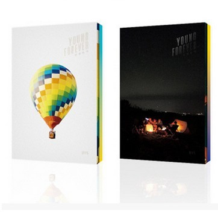

| “WINGS外传”讲述了防弹少年团在《WINGS》中未讲完的那些关于青春与成长故事。如果说《花样年华》系列和《WINGS》讲述了青春与成长的故事，那“WINGS外传”则是给这个时代的疼痛“青春”送去了温暖的安慰与希望。
以Left和Right两个版本发行的《YOU NEVER WALK ALONE》的封面分别在幽静的海边、废弃的工厂等地来回进行了拍摄，展现了7个成员各自的不同面貌。造型精致极具魅力的成员们一起搭着肩、开着玩笑的样子展现了防弹少年团成员间独特的化学反应，同时也呼应了“只要在一起就能战胜任何的困难与黑暗”的专辑主题。 这种视觉性的讯息在MV中更为突出。传递了“即使深陷在令人痛心的悲伤旋涡中也不能放弃‘重生与希望’”这般温暖讯息的《Spring Day》，以及巧妙的融入了现代舞，将整体视觉效果提高了一个层次，让整首歌的表演达到了前所未有高度的《Not Today》， 这两支MV不仅完成度极高，不会让粉丝们失望以外，同时也再一次巩固了防弹少年团一直以来所坚守的信条，即用震撼力十足的故事来加深团队认同性。 融合了世代差异，旋律符合大众偏好的主打歌《Spring Day》将更进一步的展现防弹少年团的音乐世界。4首新歌加上《WINGS》原有的14首歌曲，让《WINGS》的故事得到了延续，这一对翅膀也终于变得羽翼丰满。 《Spring Day》是防弹少年团自出道以来一直与世界流行趋势同步，在音乐的道路上不断的成长。巧妙融合了British-Rock式感性和电子音的另类Hip-hop歌曲，它将让你感受到防弹少年团的别样魅力。加入了Rap Monster和SUGA真实经历的歌词中包含了期待与疏远后的朋友再次相见，绝不放弃希望的讯息，让整首歌更加动人，更有说服力。特别是由Rap Monster作曲的副歌部分，抒情的旋律给人以朦胧的美感，这证明他有做一名流行音乐作曲家的潜力。另外，还能听到担任了非Rap而是Vocal Part的J-HOPE的美妙嗓音，Vocal成员们用各自独特的音色完美诠释了这首歌，让整首歌充满了温暖的感性，这正是《Spring Day》的又一个魅力Point。 《WINGS外传：YOU NEVER WALK ALONE》在专辑预售期间达到了70万张；新歌也全部登上美国iTunes的Top Songs排行榜TOP30，〈春日〉列位第八位 。 | |
| 防弹少年团最新专辑由国内外超豪华的制作人共同打造。Pdogg, “hitman”bang(方时赫), Slow Rabbit, Supreme Boi等大热师团为首，加上Dynamic Duo的Gaeko 、Primary、Philtre等国内音乐人。还有与Britney Spears, Rihanna, Beyonce, Justin Bieber一同创作的美国制作人Tricky Stewart。致力于提高音乐上的完成度。此外与Jessie J, Selena Gomez一同创作的James F. Reynolds，与Chris Brown和David Guetta一同创作的Jaycen Joshua，担任格莱美奖获得者Bob Horn, Kanye West和Drake的专辑混音的Ken Lewis也担任这次专辑的混音工作。‘WINGS’集结国内外大热的制作人，诞生历代以来的好专辑。 防弹少年团正规2辑‘WINGS’发售。通过‘花样年华’系列迎来人生最美丽瞬间的防弹少年团，放下过去的时间，重新站在新的大门前。将于10月10日发售的‘WINGS’是表达少年出生以来第一次与诱惑相见，陷入苦恼和矛盾的歌曲。苦痛和欢喜反复交替的七名少年，让人联想到破壳的鸟儿展翅翱翔。 《WINGS》的特别之处是，2013年出道后最初收录了防弹少年团成员的个人solo单曲。改编各成员的自传故事创作而成的solo单曲，穿插在在事先公开的预告里。虽然是短短的2~3分也展现了高水准的影像美。大大提升了对回归的期待感。 | |
|  | 继先前迷你专辑《花样年华 pt.1》与《花样年华 pt.2》，2016年首推特别迷你专辑《花样年华 Young Forever》，是花样系列的最终曲，经纪公司 BigHit 於20日零时公开「EPILOGUE : Young Forever」一曲，MV 中包含了先前花样年华里《I NEED U》和《RUN》的主打曲 MV 画面，彷佛回顾从前年少时的过往种种，延续之前的感动，期望青春能够永续，迎接此次最终曲的到来。 2015年4月与11月，防弹少年团先后发行了专辑《花样年华pt.1》及《花样年华pt.2》，受到粉丝好评，本次专辑作为花样年华系列的收尾之作，讲述了最后的青春故事，于2016年5月2日0时正式发布。 MV 中充满各种涵义的场面与回忆过往的成员们，奔跑在机场跑道上一起前进，留下了「Young Forever」的这一句话，许多粉丝看过 MV 直呼感动的落下眼泪，希望防弹少年团也如同这句话永远的存在著。 歌词中唱出对於青春的挣扎，成员们用与彼此对话的方式表达复杂的心情，也更加表达出了对舞台的渴望与爱著粉丝的心，其中无数次唱到「Forever we are young」，更是引起年轻人的共鸣，呐喊出了存在幼小心灵中的声音。 |
| 《花样年华 pt.2》是上张专辑《花样年华 pt.1》的续集，两张专辑成为“青春两部曲”，所谓青春就是在动荡不安的现实世界中也要往前走，以歌声唱出灿烂的青春火花。新专辑收录了包括主打歌《RUN》在内的九首歌曲，队长Rap Monster、SUGA、J-Hope、V和柾国等成员亦参与了歌曲制作。 主打曲《Run》之中有着东方感的电吉他旋律以及摇滚元素，便是由《I NEED U》接续而来，但他们这次还加入钢琴、小提琴…等抒情性乐器，使得《Run》有着与《I NEED U》截然不同的风格。 《花样年华 pt.2》的概念照。照片以柔和阳光与充满年轻气息的街景为主，同时呈现出 BTS 防弹少年团的成熟与自由奔放。 | |
| 《花样年华pt.1》与《花样年华 pt.2》两张专辑成为防弹少年团的“青春两部曲”，所谓青春就是在动荡不安的现实世界中也要往前走，以歌声唱出灿烂的青春火花。
新专辑收录了包括主打歌《I NEED U》在内的九首歌曲，队长Rap Monster、SUGA、J-Hope、V和柾国等成员亦参与了歌曲制作。发行者为big hitEntertainment公司。 早前通过《学校三部曲》专辑歌唱10多岁少年之梦想、幸福、爱情的防弹少年团携带新专辑《花样年华Part.1》重磅回归，以更加成熟面貌归来歌唱青春。 《花样年华 pt.1》是防弹少年团准备的《青春二部曲》中的第一部专辑。防弹少年团通过该专辑歌唱不知何时会凋谢的灿烂、不稳定青春。体现了青春的惶恐与不安，专辑分为白日梦、不安、花开三篇章。 完成学校三部曲的防弹少年团通过新专辑将正式解除对青春的苦恼。主打曲目《I NEED U》是一首与都市风接轨的电子舞曲，描述了为了挽救恋人关系中坠落的爱情而渴求焦心的男人的故事。 | |
| 韩国人气男团防弹少年团二月推出迷你二辑《Skool Luv Affair》后，时隔半年回归推出首张正规专辑《DARK&WILD》。专辑的14首单曲均由成员亲自参与制作，体现了防弹少年团坚持自己音乐风格的独特魅力。 主打曲《Danger》[2]是防弹少年团上一张专辑主打曲《男子汉》的后续曲，描述了 面对女朋友的冷淡内心的愤怒，是一首以Club Tune的Hip-Hop节奏和朋克吉他的乐音结合的Hybrid Hip-Hop曲，让人印象深刻的顶胯舞蹈和用手指比出的枪也预示着要成长为威力极强的炮弹。 收录曲《let me know》由成员Suga参与全程制作，是一首不同于组合风格的抒情歌曲。 《荷尔蒙战争》描述了因为见到漂亮女生而荷尔蒙爆发导致心脏怦怦直跳的心动感觉。 |
| copyright © 2017 Army Home All Rights Reserved |